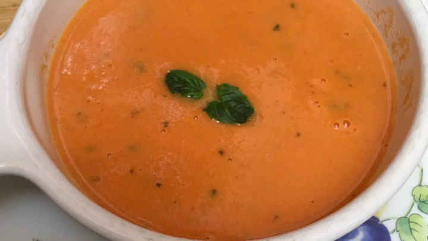

D's Famous Salsa
Did somebody say salsa? Liven up your event with this salsa recipe! Salsa is used as a condiment in Mexican and Southwestern cuisines; usually includes cooked tomatoes, chili peppers, onion, garlic, and fresh cilantro (coriander).

Tomato Basil Soup
Homemade roasted tomato basil soup with fresh tomatoes, garlic, olive oil and caramelized onions. Delicious, flavorful and the best way to use up garden tomatoes! You’ll never want to go back to the canned stuff after you try this.